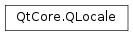

QLocale¶
Synopsis¶
Functions¶
- def
__eq__(other) - def
__ne__(other) - def
amText() - def
bcp47Name() - def
country() - def
createSeparatedList(strl) - def
currencySymbol([arg__1=CurrencySymbol]) - def
dateFormat([format=LongFormat]) - def
dateTimeFormat([format=LongFormat]) - def
dayName(arg__1[, format=LongFormat]) - def
decimalPoint() - def
exponential() - def
firstDayOfWeek() - def
formattedDataSize(bytes[, precision=2[, format=QLocale.DataSizeIecFormat]]) - def
groupSeparator() - def
language() - def
measurementSystem() - def
monthName(arg__1[, format=LongFormat]) - def
name() - def
nativeCountryName() - def
nativeLanguageName() - def
negativeSign() - def
numberOptions() - def
percent() - def
pmText() - def
positiveSign() - def
quoteString(str[, style=StandardQuotation]) - def
quoteString(str[, style=StandardQuotation]) - def
script() - def
setNumberOptions(options) - def
standaloneDayName(arg__1[, format=LongFormat]) - def
standaloneMonthName(arg__1[, format=LongFormat]) - def
swap(other) - def
textDirection() - def
timeFormat([format=LongFormat]) - def
toCurrencyString(arg__1, symbol, precision) - def
toCurrencyString(arg__1[, symbol=”“]) - def
toCurrencyString(arg__1[, symbol=”“]) - def
toCurrencyString(arg__1[, symbol=”“]) - def
toCurrencyString(arg__1[, symbol=”“]) - def
toCurrencyString(arg__1[, symbol=”“]) - def
toCurrencyString(arg__1[, symbol=”“]) - def
toCurrencyString(arg__1[, symbol=”“]) - def
toCurrencyString(i, symbol, precision) - def
toCurrencyString(i[, symbol=”“]) - def
toDate(string, format) - def
toDate(string[, format=LongFormat]) - def
toDateTime(string, format) - def
toDateTime(string[, format=LongFormat]) - def
toDouble(s) - def
toFloat(s) - def
toInt(s) - def
toLongLong(s) - def
toLower(str) - def
toShort(s) - def
toString(date, formatStr) - def
toString(dateTime, format) - def
toString(dateTime[, format=LongFormat]) - def
toString(date[, format=LongFormat]) - def
toString(i) - def
toString(i) - def
toString(i) - def
toString(i[, f=’g’[, prec=6]]) - def
toString(i[, f=’g’[, prec=6]]) - def
toString(time, formatStr) - def
toString(time[, format=LongFormat]) - def
toTime(string, format) - def
toTime(string[, format=LongFormat]) - def
toUInt(s) - def
toULongLong(s) - def
toUShort(s) - def
toUpper(str) - def
uiLanguages() - def
weekdays() - def
zeroDigit()
Static functions¶
- def
c() - def
countriesForLanguage(lang) - def
countryToString(country) - def
languageToString(language) - def
matchingLocales(language, script, country) - def
scriptToString(script) - def
setDefault(locale) - def
system()
Detailed Description¶
The
PySide2.QtCore.QLocaleclass converts between numbers and their string representations in various languages.
PySide2.QtCore.QLocaleis initialized with a language/country pair in its constructor and offers number-to-string and string-to-number conversion functions similar to those inPySide2.QtCore.QString.Example:
egyptian = QLocale(QLocale.Arabic, QLocale.Egypt) s1 = egyptian.toString(1.571429E+07, 'e') s2 = egyptian.toString(10) (d, ok) = egyptian.toDouble(s1) (i, ok) = egyptian.toInt(s2)
PySide2.QtCore.QLocalesupports the concept of a default locale, which is determined from the system’s locale settings at application startup. The default locale can be changed by calling the static memberPySide2.QtCore.QLocale.setDefault(). Setting the default locale has the following effects:
- If a
PySide2.QtCore.QLocaleobject is constructed with the default constructor, it will use the default locale’s settings.QString.toInt(),QString.toDouble(), etc., interpret the string according to the default locale. If this fails, it falls back on the “C” locale.QString.arg()uses the default locale to format a number when its position specifier in the format string contains an ‘L’, e.g. “%L1”.The following example illustrates how to use
PySide2.QtCore.QLocaledirectly:QLocale.setDefault(QLocale(QLocale.Hebrew, QLocale.Israel)) hebrew = QLocale() # Constructs a default QLocale s1 = hebrew.toString(15714.3, 'e') QLocale.setDefault(QLocale(QLocale.C)) c = QLocale() (d, ok) = c.toDouble("1234,56") # ok == false (d, ok) = c.toDouble("1234.56") # ok == true, d == 1234.56 QLocale.setDefault(QLocale(QLocale.German)) german = QLocale() (d, ok) = german.toDouble("1234,56") # ok == true, d == 1234.56 (d, ok) = german.toDouble("1234.56") # ok == true, d == 1234.56 QLocale.setDefault(QLocale(QLocale.English, QLocale.UnitedStates)) english = QLocale() string = '%s %s %10x' % (12345, english.toString(12345), 12345) # string == "12345 12,345 3039"When a language/country pair is specified in the constructor, one of three things can happen:
- If the language/country pair is found in the database, it is used.
- If the language is found but the country is not, or if the country is
AnyCountry, the language is used with the most appropriate available country (for example, Germany for German),- If neither the language nor the country are found,
PySide2.QtCore.QLocaledefaults to the default locale (seePySide2.QtCore.QLocale.setDefault()).Use
PySide2.QtCore.QLocale.language()andPySide2.QtCore.QLocale.country()to determine the actual language and country values used.An alternative method for constructing a
PySide2.QtCore.QLocaleobject is by specifying the locale name.korean = QLocale("ko") swiss = QLocale("de_CH")This constructor converts the locale name to a language/country pair; it does not use the system locale database.
Note
For the current keyboard input locale take a look at
QInputMethod.locale().
PySide2.QtCore.QLocale‘s data is based on Common Locale Data Repository v31.0.1.See also
QString.arg()QString.toInt()QString.toDouble()QInputMethod.locale()
-
class
PySide2.QtCore.QLocale¶ -
class
PySide2.QtCore.QLocale(language[, country=AnyCountry]) -
class
PySide2.QtCore.QLocale(language, script, country) -
class
PySide2.QtCore.QLocale(other) -
class
PySide2.QtCore.QLocale(name) Parameters: - language –
PySide2.QtCore.QLocale.Language - other –
PySide2.QtCore.QLocale - script –
PySide2.QtCore.QLocale.Script - name – unicode
- country –
PySide2.QtCore.QLocale.Country
Constructs a
PySide2.QtCore.QLocaleobject initialized with the default locale. If no default locale was set usingPySide2.QtCore.QLocale.setDefault(), this locale will be the same as the one returned byPySide2.QtCore.QLocale.system().See also
Constructs a
PySide2.QtCore.QLocaleobject with the specifiedlanguageandcountry.- If the language/country pair is found in the database, it is used.
- If the language is found but the country is not, or if the country is
AnyCountry, the language is used with the most appropriate available country (for example, Germany for German), - If neither the language nor the country are found,
PySide2.QtCore.QLocaledefaults to the default locale (seePySide2.QtCore.QLocale.setDefault()).
The language and country that are actually used can be queried using
PySide2.QtCore.QLocale.language()andPySide2.QtCore.QLocale.country().See also
PySide2.QtCore.QLocale.setDefault()PySide2.QtCore.QLocale.language()PySide2.QtCore.QLocale.country()Constructs a
PySide2.QtCore.QLocaleobject with the specifiedlanguage,scriptandcountry.- If the language/script/country is found in the database, it is used.
- If both
scriptisAnyScriptandcountryisAnyCountry, the language is used with the most appropriate available script and country (for example, Germany for German), - If either
scriptisAnyScriptorcountryisAnyCountry, the language is used with the first locale that matches the givenscriptandcountry. - If neither the language nor the country are found,
PySide2.QtCore.QLocaledefaults to the default locale (seePySide2.QtCore.QLocale.setDefault()).
The language, script and country that are actually used can be queried using
PySide2.QtCore.QLocale.language(),PySide2.QtCore.QLocale.script()andPySide2.QtCore.QLocale.country().See also
PySide2.QtCore.QLocale.setDefault()PySide2.QtCore.QLocale.language()PySide2.QtCore.QLocale.script()PySide2.QtCore.QLocale.country()Constructs a
PySide2.QtCore.QLocaleobject as a copy ofother.Constructs a
PySide2.QtCore.QLocaleobject with the specifiedname, which has the format “language[_script][_country][.codeset][@modifier]” or “C”, where:- language is a lowercase, two-letter, ISO 639 language code (also some three-letter codes),
- script is a titlecase, four-letter, ISO 15924 script code,
- country is an uppercase, two-letter, ISO 3166 country code (also “419” as defined by United Nations),
- and codeset and modifier are ignored.
The separator can be either underscore or a minus sign.
If the string violates the locale format, or language is not a valid ISO 639 code, the “C” locale is used instead. If country is not present, or is not a valid ISO 3166 code, the most appropriate country is chosen for the specified language.
The language, script and country codes are converted to their respective
Language,ScriptandCountryenums. After this conversion is performed, the constructor behaves exactly likePySide2.QtCore.QLocale(Country, Script, Language).This constructor is much slower than
PySide2.QtCore.QLocale(Country, Script, Language).See also
- language –
-
PySide2.QtCore.QLocale.Language¶ This enumerated type is used to specify a language.
Constant Description QLocale.AnyLanguage QLocale.C The “C” locale is identical in behavior to English/ UnitedStates.QLocale.Abkhazian QLocale.Oromo QLocale.Afan Obsolete, please use Oromo QLocale.Afar QLocale.Afrikaans QLocale.Akoose Since Qt 5.3 QLocale.Albanian QLocale.Amharic QLocale.Arabic QLocale.Armenian QLocale.Assamese QLocale.Avaric QLocale.Aymara QLocale.Azerbaijani QLocale.Bashkir QLocale.Basque QLocale.Bengali QLocale.Dzongkha QLocale.Bhutani Obsolete, please use Dzongkha QLocale.Bihari QLocale.Bislama QLocale.Bosnian QLocale.Bodo QLocale.Breton QLocale.Bulgarian QLocale.Burmese QLocale.Belarusian QLocale.Byelorussian Obsolete, please use Belarusian QLocale.Khmer QLocale.Cambodian Obsolete, please use Khmer QLocale.Catalan QLocale.Chamorro QLocale.Chechen QLocale.Chinese QLocale.Church QLocale.Chuvash QLocale.Cornish QLocale.Corsican QLocale.Cree QLocale.Croatian QLocale.Czech QLocale.Danish QLocale.Divehi QLocale.Dutch QLocale.English QLocale.Esperanto QLocale.Estonian QLocale.Faroese QLocale.Fijian QLocale.Finnish QLocale.French QLocale.WesternFrisian same as Frisian QLocale.Frisian same as QLocale.Gaelic QLocale.Galician QLocale.Georgian QLocale.German QLocale.Greek QLocale.Greenlandic QLocale.Guarani QLocale.Gujarati QLocale.Haitian QLocale.Hausa QLocale.Hebrew QLocale.Herero QLocale.Hindi QLocale.HiriMotu QLocale.Hungarian QLocale.Icelandic QLocale.Indonesian QLocale.Interlingua QLocale.Interlingue QLocale.Inuktitut QLocale.Inupiak QLocale.Irish QLocale.Italian QLocale.Japanese QLocale.Javanese QLocale.Kannada QLocale.Kanuri QLocale.Kashmiri QLocale.Kazakh QLocale.Kinyarwanda QLocale.Kirghiz QLocale.Komi QLocale.Kongo QLocale.Korean QLocale.Kurdish QLocale.Rundi QLocale.Kurundi Obsolete, please use Rundi QLocale.Kwanyama QLocale.Lakota Since Qt 5.3 QLocale.Lao QLocale.Latin QLocale.Latvian QLocale.Limburgish QLocale.Lingala QLocale.Lithuanian QLocale.LubaKatanga QLocale.Luxembourgish QLocale.Marshallese QLocale.Macedonian QLocale.Malagasy QLocale.Malay QLocale.Malayalam QLocale.Maltese QLocale.Manx QLocale.Maori QLocale.Marathi QLocale.Moldavian Obsolete, please use Romanian QLocale.Mongolian QLocale.NauruLanguage QLocale.Navaho QLocale.Ndonga QLocale.Nepali QLocale.Norwegian same as QLocale.NorwegianBokmal same as Norwegian QLocale.NorwegianNynorsk QLocale.Occitan QLocale.Ojibwa QLocale.Oriya QLocale.Ossetic QLocale.Pali QLocale.Pashto QLocale.Persian QLocale.Polish QLocale.Portuguese QLocale.Punjabi QLocale.Quechua QLocale.Romansh QLocale.RhaetoRomance Obsolete, please use Romansh QLocale.Romanian QLocale.Russian QLocale.Samoan QLocale.Sango QLocale.Sanskrit QLocale.Sardinian QLocale.Serbian QLocale.SerboCroatian Obsolete, please use Serbian QLocale.SouthernSotho QLocale.Tswana QLocale.Shona QLocale.Sindhi QLocale.Sinhala QLocale.Swati QLocale.Slovak QLocale.Slovenian QLocale.Somali QLocale.Spanish QLocale.StandardMoroccanTamazight Since Qt 5.3 QLocale.Sundanese QLocale.Swahili QLocale.Swedish QLocale.Tagalog Obsolete, please use Filipino QLocale.Tahitian QLocale.Tajik QLocale.Tamil QLocale.Tatar QLocale.Telugu QLocale.Thai QLocale.Tibetan QLocale.Tigrinya QLocale.Tongan QLocale.Tsonga QLocale.Turkish QLocale.Turkmen QLocale.Twi Obsolete, please use Akan QLocale.Uighur QLocale.Uigur Obsolete, please use Uighur QLocale.Ukrainian QLocale.Urdu QLocale.Uzbek QLocale.Vietnamese QLocale.Volapuk QLocale.Walloon QLocale.Welsh QLocale.Wolof QLocale.Xhosa QLocale.Yiddish QLocale.Yoruba QLocale.Zhuang QLocale.Zulu QLocale.Bosnian QLocale.Divehi QLocale.Manx QLocale.Cornish QLocale.Akan QLocale.Konkani QLocale.Ga QLocale.Igbo QLocale.Kamba QLocale.Syriac QLocale.Blin QLocale.Geez QLocale.Koro QLocale.Sidamo QLocale.Atsam QLocale.Tigre QLocale.Jju QLocale.Friulian QLocale.Venda QLocale.Ewe QLocale.Walamo QLocale.Hawaiian QLocale.Tyap QLocale.Nyanja QLocale.Chewa Obsolete, please use Nyanja QLocale.Filipino QLocale.SwissGerman QLocale.SichuanYi QLocale.Kpelle QLocale.LowGerman QLocale.SouthNdebele QLocale.NorthernSotho QLocale.NorthernSami QLocale.Taroko QLocale.Gusii QLocale.Taita QLocale.Fulah QLocale.Kikuyu QLocale.Samburu QLocale.Sena QLocale.NorthNdebele QLocale.Rombo QLocale.Tachelhit QLocale.Kabyle QLocale.Nyankole QLocale.Bena QLocale.Vunjo QLocale.Bambara QLocale.Embu QLocale.Cherokee QLocale.Morisyen QLocale.Makonde QLocale.Langi QLocale.Ganda QLocale.Bemba QLocale.Kabuverdianu QLocale.Meru QLocale.Kalenjin QLocale.Nama QLocale.Machame QLocale.Colognian QLocale.Masai QLocale.Soga QLocale.Luyia QLocale.Asu QLocale.Teso QLocale.Saho QLocale.KoyraChiini QLocale.Rwa QLocale.Luo QLocale.Chiga QLocale.CentralMoroccoTamazight QLocale.KoyraboroSenni QLocale.Shambala QLocale.Aghem QLocale.Basaa QLocale.Zarma QLocale.Duala QLocale.JolaFonyi QLocale.Ewondo QLocale.Bafia QLocale.MakhuwaMeetto QLocale.Mundang QLocale.Kwasio QLocale.Nuer QLocale.Sakha QLocale.Sangu QLocale.CongoSwahili QLocale.Tasawaq QLocale.Vai QLocale.Walser QLocale.Yangben QLocale.Avestan QLocale.Asturian QLocale.Ngomba QLocale.Kako QLocale.Meta QLocale.Ngiemboon QLocale.Aragonese QLocale.Akkadian QLocale.AncientEgyptian QLocale.AncientGreek QLocale.Aramaic QLocale.Balinese QLocale.Bamun QLocale.BatakToba QLocale.Buginese QLocale.Buhid QLocale.Carian QLocale.Chakma QLocale.ClassicalMandaic QLocale.Coptic QLocale.Dogri QLocale.EasternCham QLocale.EasternKayah QLocale.Etruscan QLocale.Gothic QLocale.Hanunoo QLocale.Ingush QLocale.LargeFloweryMiao QLocale.Lepcha QLocale.Limbu QLocale.Lisu QLocale.Lu QLocale.Lycian QLocale.Lydian QLocale.Mandingo QLocale.Manipuri QLocale.Meroitic QLocale.NorthernThai QLocale.OldIrish QLocale.OldNorse QLocale.OldPersian QLocale.OldTurkish QLocale.Pahlavi QLocale.Parthian QLocale.Phoenician QLocale.PrakritLanguage QLocale.Rejang QLocale.Sabaean QLocale.Samaritan QLocale.Santali QLocale.Saurashtra QLocale.Sora QLocale.Sylheti QLocale.Tagbanwa QLocale.TaiDam QLocale.TaiNua QLocale.Ugaritic QLocale.Mapuche Since Qt 5.5 QLocale.CentralKurdish Since Qt 5.5 QLocale.LowerSorbian Since Qt 5.5 QLocale.UpperSorbian Since Qt 5.5 QLocale.Kenyang Since Qt 5.5 QLocale.Mohawk Since Qt 5.5 QLocale.Nko Since Qt 5.5 QLocale.Prussian Since Qt 5.5 QLocale.Kiche Since Qt 5.5 QLocale.SouthernSami Since Qt 5.5 QLocale.LuleSami Since Qt 5.5 QLocale.InariSami Since Qt 5.5 QLocale.SkoltSami Since Qt 5.5 QLocale.Warlpiri Since Qt 5.5 QLocale.ManichaeanMiddlePersian Since Qt 5.5 QLocale.Mende Since Qt 5.5 QLocale.AncientNorthArabian Since Qt 5.5 QLocale.LinearA Since Qt 5.5 QLocale.HmongNjua Since Qt 5.5 QLocale.Ho Since Qt 5.5 QLocale.Lezghian Since Qt 5.5 QLocale.Bassa Since Qt 5.5 QLocale.Mono Since Qt 5.5 QLocale.TedimChin Since Qt 5.5 QLocale.Maithili Since Qt 5.5 QLocale.LowerSorbian Since Qt 5.5 QLocale.UpperSorbian Since Qt 5.5 QLocale.Ahom Since Qt 5.7 QLocale.AmericanSignLanguage Since Qt 5.7 QLocale.ArdhamagadhiPrakrit Since Qt 5.7 QLocale.Bhojpuri Since Qt 5.7 QLocale.Cantonese Since Qt 5.7 QLocale.HieroglyphicLuwian Since Qt 5.7 QLocale.LiteraryChinese Since Qt 5.7 QLocale.Mazanderani Since Qt 5.7 QLocale.Mru Since Qt 5.7 QLocale.Newari Since Qt 5.7 QLocale.NorthernLuri Since Qt 5.7 QLocale.Osage Since Qt 5.7 QLocale.Palauan Since Qt 5.7 QLocale.Papiamento Since Qt 5.7 QLocale.Saraiki Since Qt 5.7 QLocale.Tangut Since Qt 5.7 QLocale.TokelauLanguage Since Qt 5.7 QLocale.TokPisin Since Qt 5.7 QLocale.TuvaluLanguage Since Qt 5.7 QLocale.UncodedLanguages Since Qt 5.7
-
PySide2.QtCore.QLocale.Script¶ This enumerated type is used to specify a script.
Constant Description QLocale.AnyScript QLocale.AdlamScript Since Qt 5.7 QLocale.AhomScript Since Qt 5.7 QLocale.AnatolianHieroglyphsScript Since Qt 5.7 QLocale.ArabicScript QLocale.ArmenianScript QLocale.AvestanScript QLocale.BalineseScript QLocale.BamumScript QLocale.BassaVahScript Since Qt 5.5 QLocale.BatakScript QLocale.BengaliScript QLocale.BhaiksukiScript Since Qt 5.7 QLocale.BopomofoScript QLocale.BrahmiScript QLocale.BrailleScript QLocale.BugineseScript QLocale.BuhidScript QLocale.CanadianAboriginalScript QLocale.CarianScript QLocale.CaucasianAlbanianScript Since Qt 5.5 QLocale.ChakmaScript QLocale.ChamScript QLocale.CherokeeScript QLocale.CopticScript QLocale.CypriotScript QLocale.CyrillicScript QLocale.DeseretScript QLocale.DevanagariScript QLocale.DuployanScript Since Qt 5.5 QLocale.EgyptianHieroglyphsScript QLocale.ElbasanScript Since Qt 5.5 QLocale.EthiopicScript QLocale.FraserScript QLocale.GeorgianScript QLocale.GlagoliticScript QLocale.GothicScript QLocale.GranthaScript Since Qt 5.5 QLocale.GreekScript QLocale.GujaratiScript QLocale.GurmukhiScript QLocale.HanScript QLocale.HangulScript QLocale.HanunooScript QLocale.HanWithBopomofoScript Since Qt 5.7 QLocale.HatranScript Since Qt 5.7 QLocale.HebrewScript QLocale.HiraganaScript QLocale.ImperialAramaicScript QLocale.InscriptionalPahlaviScript QLocale.InscriptionalParthianScript QLocale.JamoScript Since Qt 5.7 QLocale.JapaneseScript QLocale.JavaneseScript QLocale.KaithiScript QLocale.KannadaScript QLocale.KatakanaScript QLocale.KayahLiScript QLocale.KharoshthiScript QLocale.KhmerScript QLocale.KhojkiScript Since Qt 5.5 QLocale.KhudawadiScript Since Qt 5.5 QLocale.KoreanScript QLocale.LannaScript QLocale.LaoScript QLocale.LatinScript QLocale.LepchaScript QLocale.LimbuScript QLocale.LinearAScript Since Qt 5.5 QLocale.LinearBScript QLocale.LycianScript QLocale.LydianScript QLocale.MahajaniScript Since Qt 5.5 QLocale.MalayalamScript QLocale.MandaeanScript QLocale.ManichaeanScript Since Qt 5.5 QLocale.MarchenScript Since Qt 5.7 QLocale.MeiteiMayekScript QLocale.MendeKikakuiScript Since Qt 5.5 QLocale.MeroiticScript QLocale.MeroiticCursiveScript QLocale.ModiScript Since Qt 5.5 QLocale.MongolianScript QLocale.MroScript Since Qt 5.5 QLocale.MultaniScript Since Qt 5.7 QLocale.MyanmarScript QLocale.NabataeanScript Since Qt 5.5 QLocale.NkoScript QLocale.NewaScript Since Qt 5.7 QLocale.NewTaiLueScript QLocale.OghamScript QLocale.OlChikiScript QLocale.OldItalicScript QLocale.OldHungarianScript Since Qt 5.7 QLocale.OldNorthArabianScript Since Qt 5.5 QLocale.OldPermicScript Since Qt 5.5 QLocale.OldPersianScript QLocale.OldSouthArabianScript QLocale.OriyaScript QLocale.OrkhonScript QLocale.OsageScript Since Qt 5.7 QLocale.OsmanyaScript QLocale.PahawhHmongScript Since Qt 5.5 QLocale.PalmyreneScript Since Qt 5.5 QLocale.PauCinHauScript Since Qt 5.5 QLocale.PhagsPaScript QLocale.PhoenicianScript QLocale.PollardPhoneticScript QLocale.PsalterPahlaviScript Since Qt 5.5 QLocale.RejangScript QLocale.RunicScript QLocale.SamaritanScript QLocale.SaurashtraScript QLocale.SharadaScript QLocale.ShavianScript QLocale.SiddhamScript Since Qt 5.5 QLocale.SignWritingScript Since Qt 5.7 QLocale.SimplifiedHanScript same as QLocale.SimplifiedChineseScript same as QLocale.SinhalaScript QLocale.SoraSompengScript QLocale.CuneiformScript QLocale.SundaneseScript QLocale.SylotiNagriScript QLocale.SyriacScript QLocale.TagalogScript QLocale.TagbanwaScript QLocale.TaiLeScript QLocale.TaiVietScript QLocale.TakriScript QLocale.TamilScript QLocale.TangutScript Since Qt 5.7 QLocale.TeluguScript QLocale.ThaanaScript QLocale.ThaiScript QLocale.TibetanScript QLocale.TifinaghScript QLocale.TirhutaScript Since Qt 5.5 QLocale.TraditionalHanScript same as QLocale.TraditionalChineseScript same as QLocale.UgariticScript QLocale.VaiScript QLocale.VarangKshitiScript Since Qt 5.5 QLocale.YiScript
Note
This enum was introduced in Qt 4.8.
-
PySide2.QtCore.QLocale.Country¶ This enumerated type is used to specify a country.
Constant Description QLocale.AnyCountry QLocale.Afghanistan QLocale.Albania QLocale.Algeria QLocale.AmericanSamoa QLocale.Andorra QLocale.Angola QLocale.Anguilla QLocale.Antarctica QLocale.AntiguaAndBarbuda QLocale.Argentina QLocale.Armenia QLocale.Aruba QLocale.Australia QLocale.Austria QLocale.Azerbaijan QLocale.Bahamas QLocale.Bahrain QLocale.Bangladesh QLocale.Barbados QLocale.Belarus QLocale.Belgium QLocale.Belize QLocale.Benin QLocale.Bermuda QLocale.Bhutan QLocale.Bolivia QLocale.BosniaAndHerzegowina QLocale.Botswana QLocale.BouvetIsland QLocale.Brazil QLocale.BritishIndianOceanTerritory QLocale.Brunei QLocale.Bulgaria QLocale.BurkinaFaso QLocale.Burundi QLocale.Cambodia QLocale.Cameroon QLocale.Canada QLocale.CanaryIslands QLocale.CapeVerde QLocale.CaymanIslands QLocale.CentralAfricanRepublic QLocale.Chad QLocale.Chile QLocale.China QLocale.ChristmasIsland QLocale.ClippertonIsland QLocale.CocosIslands QLocale.Colombia QLocale.Comoros QLocale.CongoKinshasa QLocale.CongoBrazzaville QLocale.DemocraticRepublicOfCongo Obsolete, please use QLocale.PeoplesRepublicOfCongo Obsolete, please use QLocale.CookIslands QLocale.CostaRica QLocale.IvoryCoast QLocale.Croatia QLocale.Cuba QLocale.Cyprus QLocale.CzechRepublic QLocale.Denmark QLocale.Djibouti QLocale.Dominica QLocale.DominicanRepublic QLocale.EastTimor QLocale.Ecuador QLocale.Egypt QLocale.ElSalvador QLocale.EquatorialGuinea QLocale.Eritrea QLocale.Estonia QLocale.Ethiopia QLocale.EuropeanUnion Since Qt 5.7 QLocale.FalklandIslands QLocale.FaroeIslands QLocale.Fiji QLocale.Finland QLocale.France QLocale.FrenchGuiana QLocale.FrenchPolynesia QLocale.FrenchSouthernTerritories QLocale.Gabon QLocale.Gambia QLocale.Georgia QLocale.Germany QLocale.Ghana QLocale.Gibraltar QLocale.Greece QLocale.Greenland QLocale.Grenada QLocale.Guadeloupe QLocale.Guam QLocale.Guatemala QLocale.Guernsey QLocale.Guinea QLocale.GuineaBissau QLocale.Guyana QLocale.Haiti QLocale.HeardAndMcDonaldIslands QLocale.Honduras QLocale.HongKong QLocale.Hungary QLocale.Iceland QLocale.India QLocale.Indonesia QLocale.Iran QLocale.Iraq QLocale.Ireland QLocale.Israel QLocale.Italy QLocale.Jamaica QLocale.Japan QLocale.Jordan QLocale.Kazakhstan QLocale.Kenya QLocale.Kiribati QLocale.NorthKorea QLocale.SouthKorea QLocale.DemocraticRepublicOfKorea Obsolete, please use QLocale.RepublicOfKorea Obsolete, please use QLocale.Kosovo QLocale.Kuwait QLocale.Kyrgyzstan QLocale.Laos QLocale.Latvia QLocale.Lebanon QLocale.Lesotho QLocale.Liberia QLocale.Libya QLocale.Liechtenstein QLocale.Lithuania QLocale.Luxembourg QLocale.Macau QLocale.Macedonia QLocale.Madagascar QLocale.Malawi QLocale.Malaysia QLocale.Maldives QLocale.Mali QLocale.Malta QLocale.MarshallIslands QLocale.Martinique QLocale.Mauritania QLocale.Mauritius QLocale.Mayotte QLocale.Mexico QLocale.Micronesia QLocale.Moldova QLocale.Monaco QLocale.Mongolia QLocale.Montserrat QLocale.Morocco QLocale.Mozambique QLocale.Myanmar QLocale.Namibia QLocale.NauruCountry QLocale.Nepal QLocale.Netherlands QLocale.NewCaledonia QLocale.NewZealand QLocale.Nicaragua QLocale.Niger QLocale.Nigeria QLocale.Niue QLocale.NorfolkIsland QLocale.NorthernMarianaIslands QLocale.Norway QLocale.Oman QLocale.OutlyingOceania Since Qt 5.7 QLocale.Pakistan QLocale.Palau QLocale.PalestinianTerritories QLocale.Panama QLocale.PapuaNewGuinea QLocale.Paraguay QLocale.Peru QLocale.Philippines QLocale.Pitcairn QLocale.Poland QLocale.Portugal QLocale.PuertoRico QLocale.Qatar QLocale.Reunion QLocale.Romania QLocale.Russia same as QLocale.RussianFederation same as Russia QLocale.Rwanda QLocale.SaintKittsAndNevis QLocale.SaintLucia QLocale.SaintVincentAndTheGrenadines QLocale.Samoa QLocale.SanMarino QLocale.SaoTomeAndPrincipe QLocale.SaudiArabia QLocale.Senegal QLocale.Seychelles QLocale.SierraLeone QLocale.Singapore QLocale.Slovakia QLocale.Slovenia QLocale.SolomonIslands QLocale.Somalia QLocale.SouthAfrica QLocale.SouthGeorgiaAndTheSouthSandwichIslands QLocale.Spain QLocale.SriLanka QLocale.SaintHelena QLocale.SaintPierreAndMiquelon QLocale.Sudan QLocale.Suriname QLocale.SvalbardAndJanMayenIslands QLocale.Swaziland QLocale.Sweden QLocale.Switzerland QLocale.Syria QLocale.SyrianArabRepublic Obsolete, please use Syria QLocale.Taiwan QLocale.Tajikistan QLocale.Tanzania QLocale.Thailand QLocale.Togo QLocale.TokelauCountry QLocale.Tokelau Obsolete, please use QLocale.Tonga QLocale.TrinidadAndTobago QLocale.Tunisia QLocale.Turkey QLocale.Turkmenistan QLocale.TurksAndCaicosIslands QLocale.TuvaluCountry QLocale.Tuvalu Obsolete, please use QLocale.Uganda QLocale.Ukraine QLocale.UnitedArabEmirates QLocale.UnitedKingdom QLocale.UnitedStates QLocale.UnitedStatesMinorOutlyingIslands QLocale.Uruguay QLocale.Uzbekistan QLocale.Vanuatu QLocale.VaticanCityState QLocale.Venezuela QLocale.Vietnam QLocale.BritishVirginIslands QLocale.UnitedStatesVirginIslands QLocale.WallisAndFutunaIslands QLocale.WesternSahara QLocale.Yemen QLocale.Zambia QLocale.Zimbabwe QLocale.Montenegro QLocale.Serbia QLocale.SaintBarthelemy QLocale.SaintMartin QLocale.LatinAmericaAndTheCaribbean QLocale.AscensionIsland QLocale.AlandIslands QLocale.DiegoGarcia QLocale.CeutaAndMelilla QLocale.IsleOfMan QLocale.Jersey QLocale.TristanDaCunha QLocale.SouthSudan QLocale.CuraSao QLocale.Bonaire QLocale.SintMaarten
-
PySide2.QtCore.QLocale.MeasurementSystem¶ This enum defines which units are used for measurement.
Constant Description QLocale.MetricSystem This value indicates metric units, such as meters, centimeters and millimeters. QLocale.ImperialUSSystem This value indicates imperial units, such as inches and miles as they are used in the United States. QLocale.ImperialUKSystem This value indicates imperial units, such as inches and miles as they are used in the United Kingdom. QLocale.ImperialSystem Provided for compatibility. Same as
-
PySide2.QtCore.QLocale.FormatType¶ This enum describes the types of format that can be used when converting
PySide2.QtCore.QDateandPySide2.QtCore.QTimeobjects to strings.Constant Description QLocale.LongFormat The long version of day and month names; for example, returning “January” as a month name. QLocale.ShortFormat The short version of day and month names; for example, returning “Jan” as a month name. QLocale.NarrowFormat A special version of day and month names for use when space is limited; for example, returning “J” as a month name. Note that the narrow format might contain the same text for different months and days or it can even be an empty string if the locale doesn’t support narrow names, so you should avoid using it for date formatting. Also, for the system locale this format is the same as .
-
PySide2.QtCore.QLocale.NumberOption¶ This enum defines a set of options for number-to-string and string-to-number conversions. They can be retrieved with
PySide2.QtCore.QLocale.numberOptions()and set withPySide2.QtCore.QLocale.setNumberOptions().Constant Description QLocale.DefaultNumberOptions This option represents the default behavior, with group separators, with one leading zero in single digit exponents, and without trailing zeroes after the decimal dot. QLocale.OmitGroupSeparator If this option is set, the number-to-string functions will not insert group separators in their return values. The default is to insert group separators. QLocale.RejectGroupSeparator If this option is set, the string-to-number functions will fail if they encounter group separators in their input. The default is to accept numbers containing correctly placed group separators. QLocale.OmitLeadingZeroInExponent If this option is set, the number-to-string functions will not pad exponents with zeroes when printing floating point numbers in scientific notation. The default is to add one leading zero to single digit exponents. QLocale.RejectLeadingZeroInExponent If this option is set, the string-to-number functions will fail if they encounter an exponent padded with zeroes when parsing a floating point number in scientific notation. The default is to accept such padding. QLocale.IncludeTrailingZeroesAfterDot If this option is set, the number-to-string functions will pad numbers with zeroes to the requested precision in “g” or “most concise” mode, even if the number of significant digits is lower than the requested precision. The default is to omit trailing zeroes. QLocale.RejectTrailingZeroesAfterDot If this option is set, the string-to-number functions will fail if they encounter trailing zeroes after the decimal dot when parsing a number in scientific or decimal representation. The default is to accept trailing zeroes.
-
PySide2.QtCore.QLocale.FloatingPointPrecisionOption¶ This enum defines constants that can be given as precision to
QString.number(),QByteArray.number(), andQLocale.toString()when converting floats or doubles, in order to express a variable number of digits as precision.Constant Description QLocale.FloatingPointShortest The conversion algorithm will try to find the shortest accurate representation for the given number. “Accurate” means that you get the exact same number back from an inverse conversion on the generated string representation. See also
PySide2.QtCore.QLocale.toString()PySide2.QtCore.QStringPySide2.QtCore.QByteArray
Note
This enum was introduced in Qt 5.7.
-
PySide2.QtCore.QLocale.CurrencySymbolFormat¶ Specifies the format of the currency symbol.
Constant Description QLocale.CurrencyIsoCode a ISO-4217 code of the currency. QLocale.CurrencySymbol a currency symbol. QLocale.CurrencyDisplayName a user readable name of the currency.
Note
This enum was introduced in Qt 4.8.
-
PySide2.QtCore.QLocale.DataSizeFormat¶ Specifies the format for representation of data quantities.
Constant Description QLocale.DataSizeIecFormat format using base 1024 and IEC prefixes: KiB, MiB, GiB, … QLocale.DataSizeTraditionalFormat format using base 1024 and SI prefixes: kB, MB, GB, … QLocale.DataSizeSIFormat format using base 1000 and SI prefixes: kB, MB, GB, …
Note
This enum was introduced in Qt 5.10.
-
PySide2.QtCore.QLocale.QuotationStyle¶ This enum defines a set of possible styles for locale specific quotation.
Constant Description QLocale.StandardQuotation If this option is set, the standard quotation marks will be used to quote strings. QLocale.AlternateQuotation If this option is set, the alternate quotation marks will be used to quote strings. See also
Note
This enum was introduced in Qt 4.8.
-
PySide2.QtCore.QLocale.amText()¶ Return type: unicode Returns the localized name of the “AM” suffix for times specified using the conventions of the 12-hour clock.
See also
-
PySide2.QtCore.QLocale.bcp47Name()¶ Return type: unicode Returns the dash-separated language, script and country (and possibly other BCP47 fields) of this locale as a string.
Unlike the
PySide2.QtCore.QLocale.uiLanguages()the returned value of the represents the locale name of thePySide2.QtCore.QLocaledata but not the language the user-interface should be in.This function tries to conform the locale name to BCP47.
-
static
PySide2.QtCore.QLocale.c()¶ Return type: PySide2.QtCore.QLocaleReturns a
PySide2.QtCore.QLocaleobject initialized to the “C” locale.See also
-
static
PySide2.QtCore.QLocale.countriesForLanguage(lang)¶ Parameters: lang – PySide2.QtCore.QLocale.LanguageReturn type: Returns the list of countries that have entries for
languagein Qt’s locale database. If the result is an empty list, thenlanguageis not represented in Qt’s locale database.
-
PySide2.QtCore.QLocale.country()¶ Return type: PySide2.QtCore.QLocale.CountryReturns the country of this locale.
-
static
PySide2.QtCore.QLocale.countryToString(country)¶ Parameters: country – PySide2.QtCore.QLocale.CountryReturn type: unicode Returns a
PySide2.QtCore.QStringcontaining the name ofcountry.
-
PySide2.QtCore.QLocale.createSeparatedList(strl)¶ Parameters: strl – list of strings Return type: unicode Returns a string that represents a join of a given
listof strings with a separator defined by the locale.
-
PySide2.QtCore.QLocale.currencySymbol([arg__1=CurrencySymbol])¶ Parameters: arg__1 – PySide2.QtCore.QLocale.CurrencySymbolFormatReturn type: unicode Returns a currency symbol according to the
format.
-
PySide2.QtCore.QLocale.dateFormat([format=LongFormat])¶ Parameters: format – PySide2.QtCore.QLocale.FormatTypeReturn type: unicode Returns the date format used for the current locale.
If
formatisLongFormatthe format will be a long version. Otherwise it uses a shorter version.See also
-
PySide2.QtCore.QLocale.dateTimeFormat([format=LongFormat])¶ Parameters: format – PySide2.QtCore.QLocale.FormatTypeReturn type: unicode Returns the date time format used for the current locale.
If
formatisShortFormatthe format will be a short version. Otherwise it uses a longer version.
-
PySide2.QtCore.QLocale.dayName(arg__1[, format=LongFormat])¶ Parameters: - arg__1 –
PySide2.QtCore.int - format –
PySide2.QtCore.QLocale.FormatType
Return type: unicode
Returns the localized name of the
day(where 1 represents Monday, 2 represents Tuesday and so on), in the format specified bytype.- arg__1 –
-
PySide2.QtCore.QLocale.decimalPoint()¶ Return type: PySide2.QtCore.QCharReturns the decimal point character of this locale.
-
PySide2.QtCore.QLocale.exponential()¶ Return type: PySide2.QtCore.QCharReturns the exponential character of this locale.
-
PySide2.QtCore.QLocale.firstDayOfWeek()¶ Return type: PySide2.QtCore.Qt.DayOfWeekReturns the first day of the week according to the current locale.
-
PySide2.QtCore.QLocale.formattedDataSize(bytes[, precision=2[, format=QLocale.DataSizeIecFormat]])¶ Parameters: - bytes –
PySide2.QtCore.qint64 - precision –
PySide2.QtCore.int - format –
PySide2.QtCore.QLocale.DataSizeFormats
Return type: unicode
Converts a size in bytes to a human-readable localized string, comprising a number and a quantified unit. The quantifier is chosen such that the number is at least one, and as small as possible. For example if
bytesis 16384,precisionis 2, andformatisDataSizeIecFormat(the default), this function returns “16.00 KiB”; for 1330409069609 bytes it returns “1.21 GiB”; and so on. IfformatisDataSizeIecFormatorDataSizeTraditionalFormat, the given number of bytes is divided by a power of 1024, with result less than 1024; forDataSizeSIFormat, it is divided by a power of 1000, with result less than 1000.DataSizeIecFormatuses the new IEC standard quantifiers Ki, Mi and so on, whereasDataSizeSIFormatuses the older SI quantifiers k, M, etc., andDataSizeTraditionalFormatabuses them.- bytes –
-
PySide2.QtCore.QLocale.groupSeparator()¶ Return type: PySide2.QtCore.QCharReturns the group separator character of this locale.
-
PySide2.QtCore.QLocale.language()¶ Return type: PySide2.QtCore.QLocale.LanguageReturns the language of this locale.
-
static
PySide2.QtCore.QLocale.languageToString(language)¶ Parameters: language – PySide2.QtCore.QLocale.LanguageReturn type: unicode Returns a
PySide2.QtCore.QStringcontaining the name oflanguage.
-
static
PySide2.QtCore.QLocale.matchingLocales(language, script, country)¶ Parameters: - language –
PySide2.QtCore.QLocale.Language - script –
PySide2.QtCore.QLocale.Script - country –
PySide2.QtCore.QLocale.Country
Return type: Returns a list of valid locale objects that match the given
language,scriptandcountry.Getting a list of all locales:
QList<PySide2.QtCore.QLocale> allLocales = (QLocale.AnyLanguage,QLocale.AnyScript,QLocale.AnyCountry);Getting a list of locales suitable for Russia:
QList<PySide2.QtCore.QLocale> locales = (QLocale.AnyLanguage,QLocale.AnyScript,QLocale.Russia);- language –
-
PySide2.QtCore.QLocale.measurementSystem()¶ Return type: PySide2.QtCore.QLocale.MeasurementSystemReturns the measurement system for the locale.
-
PySide2.QtCore.QLocale.monthName(arg__1[, format=LongFormat])¶ Parameters: - arg__1 –
PySide2.QtCore.int - format –
PySide2.QtCore.QLocale.FormatType
Return type: unicode
Returns the localized name of
month, in the format specified bytype.- arg__1 –
-
PySide2.QtCore.QLocale.name()¶ Return type: unicode Returns the language and country of this locale as a string of the form “language_country”, where language is a lowercase, two-letter ISO 639 language code, and country is an uppercase, two- or three-letter ISO 3166 country code.
Note that even if
PySide2.QtCore.QLocaleobject was constructed with an explicit script, will not contain it for compatibility reasons. UsePySide2.QtCore.QLocale.bcp47Name()instead if you need a full locale name.See also
PySide2.QtCore.QLocale.QLocale()PySide2.QtCore.QLocale.language()PySide2.QtCore.QLocale.script()PySide2.QtCore.QLocale.country()PySide2.QtCore.QLocale.bcp47Name()
-
PySide2.QtCore.QLocale.nativeCountryName()¶ Return type: unicode Returns a native name of the country for the locale. For example “España” for Spanish/Spain locale.
-
PySide2.QtCore.QLocale.nativeLanguageName()¶ Return type: unicode Returns a native name of the language for the locale. For example “Schwiizertüütsch” for Swiss-German locale.
-
PySide2.QtCore.QLocale.negativeSign()¶ Return type: PySide2.QtCore.QCharReturns the negative sign character of this locale.
-
PySide2.QtCore.QLocale.numberOptions()¶ Return type: PySide2.QtCore.QLocale.NumberOptionsReturns the options related to number conversions for this
PySide2.QtCore.QLocaleinstance.By default, no options are set for the standard locales.
-
PySide2.QtCore.QLocale.__ne__(other)¶ Parameters: other – PySide2.QtCore.QLocaleReturn type: PySide2.QtCore.boolReturns
trueif thePySide2.QtCore.QLocaleobject is not the same as theotherlocale specified; otherwise returnsfalse.
-
PySide2.QtCore.QLocale.__eq__(other)¶ Parameters: other – PySide2.QtCore.QLocaleReturn type: PySide2.QtCore.boolReturns
trueif thePySide2.QtCore.QLocaleobject is the same as theotherlocale specified; otherwise returnsfalse.
-
PySide2.QtCore.QLocale.percent()¶ Return type: PySide2.QtCore.QCharReturns the percent character of this locale.
-
PySide2.QtCore.QLocale.pmText()¶ Return type: unicode Returns the localized name of the “PM” suffix for times specified using the conventions of the 12-hour clock.
See also
-
PySide2.QtCore.QLocale.positiveSign()¶ Return type: PySide2.QtCore.QCharReturns the positive sign character of this locale.
-
PySide2.QtCore.QLocale.quoteString(str[, style=StandardQuotation])¶ Parameters: - str –
PySide2.QtCore.QStringRef - style –
PySide2.QtCore.QLocale.QuotationStyle
Return type: unicode
This is an overloaded function.
- str –
-
PySide2.QtCore.QLocale.quoteString(str[, style=StandardQuotation]) Parameters: - str – unicode
- style –
PySide2.QtCore.QLocale.QuotationStyle
Return type: unicode
Returns
strquoted according to the current locale using the given quotationstyle.
-
PySide2.QtCore.QLocale.script()¶ Return type: PySide2.QtCore.QLocale.ScriptReturns the script of this locale.
-
static
PySide2.QtCore.QLocale.scriptToString(script)¶ Parameters: script – PySide2.QtCore.QLocale.ScriptReturn type: unicode Returns a
PySide2.QtCore.QStringcontaining the name ofscript.
-
static
PySide2.QtCore.QLocale.setDefault(locale)¶ Parameters: locale – PySide2.QtCore.QLocaleSets the global default locale to
locale. These values are used when aPySide2.QtCore.QLocaleobject is constructed with no arguments. If this function is not called, the system’s locale is used.Warning
In a multithreaded application, the default locale should be set at application startup, before any non-GUI threads are created.
-
PySide2.QtCore.QLocale.setNumberOptions(options)¶ Parameters: options – PySide2.QtCore.QLocale.NumberOptionsSets the
optionsrelated to number conversions for thisPySide2.QtCore.QLocaleinstance.
-
PySide2.QtCore.QLocale.standaloneDayName(arg__1[, format=LongFormat])¶ Parameters: - arg__1 –
PySide2.QtCore.int - format –
PySide2.QtCore.QLocale.FormatType
Return type: unicode
Returns the localized name of the
day(where 1 represents Monday, 2 represents Tuesday and so on) that is used as a standalone text, in the format specified bytype.If the locale information does not specify the standalone day name then return value is the same as in
PySide2.QtCore.QLocale.dayName().- arg__1 –
-
PySide2.QtCore.QLocale.standaloneMonthName(arg__1[, format=LongFormat])¶ Parameters: - arg__1 –
PySide2.QtCore.int - format –
PySide2.QtCore.QLocale.FormatType
Return type: unicode
Returns the localized name of
monththat is used as a standalone text, in the format specified bytype.If the locale information doesn’t specify the standalone month name then return value is the same as in
PySide2.QtCore.QLocale.monthName().- arg__1 –
-
PySide2.QtCore.QLocale.swap(other)¶ Parameters: other – PySide2.QtCore.QLocaleSwaps locale
otherwith this locale. This operation is very fast and never fails.
-
static
PySide2.QtCore.QLocale.system()¶ Return type: PySide2.QtCore.QLocaleReturns a
PySide2.QtCore.QLocaleobject initialized to the system locale.On Windows and Mac, this locale will use the decimal/grouping characters and date/time formats specified in the system configuration panel.
See also
-
PySide2.QtCore.QLocale.textDirection()¶ Return type: PySide2.QtCore.Qt.LayoutDirectionReturns the text direction of the language.
-
PySide2.QtCore.QLocale.timeFormat([format=LongFormat])¶ Parameters: format – PySide2.QtCore.QLocale.FormatTypeReturn type: unicode Returns the time format used for the current locale.
If
formatisLongFormatthe format will be a long version. Otherwise it uses a shorter version.See also
-
PySide2.QtCore.QLocale.toCurrencyString(arg__1[, symbol=""])¶ Parameters: - arg__1 –
PySide2.QtCore.qulonglong - symbol – unicode
Return type: unicode
This is an overloaded function.
- arg__1 –
-
PySide2.QtCore.QLocale.toCurrencyString(arg__1[, symbol=""]) Parameters: - arg__1 –
PySide2.QtCore.qlonglong - symbol – unicode
Return type: unicode
Returns a localized string representation of
valueas a currency. If thesymbolis provided it is used instead of the default currency symbol.- arg__1 –
-
PySide2.QtCore.QLocale.toCurrencyString(arg__1[, symbol=""]) Parameters: - arg__1 –
PySide2.QtCore.short - symbol – unicode
Return type: unicode
This is an overloaded function.
- arg__1 –
-
PySide2.QtCore.QLocale.toCurrencyString(arg__1[, symbol=""]) Parameters: - arg__1 –
PySide2.QtCore.ushort - symbol – unicode
Return type: unicode
This is an overloaded function.
- arg__1 –
-
PySide2.QtCore.QLocale.toCurrencyString(arg__1[, symbol=""]) Parameters: - arg__1 –
PySide2.QtCore.uint - symbol – unicode
Return type: unicode
This is an overloaded function.
- arg__1 –
-
PySide2.QtCore.QLocale.toCurrencyString(arg__1[, symbol=""]) Parameters: - arg__1 –
PySide2.QtCore.double - symbol – unicode
Return type: unicode
This is an overloaded function.
- arg__1 –
-
PySide2.QtCore.QLocale.toCurrencyString(arg__1, symbol, precision) Parameters: - arg__1 –
PySide2.QtCore.double - symbol – unicode
- precision –
PySide2.QtCore.int
Return type: unicode
This function overloads
PySide2.QtCore.QLocale.toCurrencyString().Returns a localized string representation of
valueas a currency. If thesymbolis provided it is used instead of the default currency symbol. If theprecisionis provided it is used to set the precision of the currency value.- arg__1 –
-
PySide2.QtCore.QLocale.toCurrencyString(arg__1[, symbol=""]) Parameters: - arg__1 –
PySide2.QtCore.int - symbol – unicode
Return type: unicode
This is an overloaded function.
- arg__1 –
-
PySide2.QtCore.QLocale.toCurrencyString(i[, symbol=""]) Parameters: - i –
PySide2.QtCore.float - symbol – unicode
Return type: unicode
This is an overloaded function.
- i –
-
PySide2.QtCore.QLocale.toCurrencyString(i, symbol, precision) Parameters: - i –
PySide2.QtCore.float - symbol – unicode
- precision –
PySide2.QtCore.int
Return type: unicode
- i –
-
PySide2.QtCore.QLocale.toDate(string, format)¶ Parameters: - string – unicode
- format – unicode
Return type: Parses the date string given in
stringand returns the date. SeeQDate.fromString()for information on the expressions that can be used with this function.This function searches month names and the names of the days of the week in the current locale.
If the date could not be parsed, returns an invalid date.
-
PySide2.QtCore.QLocale.toDate(string[, format=LongFormat]) Parameters: - string – unicode
- format –
PySide2.QtCore.QLocale.FormatType
Return type: Parses the date string given in
stringand returns the date. The format of the date string is chosen according to theformatparameter (seePySide2.QtCore.QLocale.dateFormat()).If the date could not be parsed, returns an invalid date.
-
PySide2.QtCore.QLocale.toDateTime(string[, format=LongFormat])¶ Parameters: - string – unicode
- format –
PySide2.QtCore.QLocale.FormatType
Return type: Parses the date/time string given in
stringand returns the time. The format of the date/time string is chosen according to theformatparameter (seePySide2.QtCore.QLocale.dateTimeFormat()).If the string could not be parsed, returns an invalid
PySide2.QtCore.QDateTime.
-
PySide2.QtCore.QLocale.toDateTime(string, format) Parameters: - string – unicode
- format – unicode
Return type: Parses the date/time string given in
stringand returns the time. SeeQDateTime.fromString()for information on the expressions that can be used with this function.Note
The month and day names used must be given in the user’s local language.
If the string could not be parsed, returns an invalid
PySide2.QtCore.QDateTime.
-
PySide2.QtCore.QLocale.toDouble(s)¶ Parameters: s – unicode Return type: (float, bool ok) Returns the double represented by the localized string
s, or 0.0 if the conversion failed.If
okis not 0, reports failure by setting *ok to false and success by setting *ok to true.Unlike
QString.toDouble(), this function does not use the ‘C’ locale if the string cannot be interpreted in this locale.c = QLocale(QLocale.C) (d, ok) = c.toDouble( "1234.56" ) # ok == true, d == 1234.56 (d, ok) = c.toDouble( "1,234.56" ) # ok == true, d == 1234.56 (d, ok) = c.toDouble( "1234,56" ) # ok == false german = QLocale(QLocale.German) (d, ok) = german.toDouble( "1234,56" ) # ok == true, d == 1234.56 (d, ok) = german.toDouble( "1.234,56" ) # ok == true, d == 1234.56 (d, ok) = german.toDouble( "1234.56" ) # ok == false (d, ok) = german.toDouble( "1.234" ) # ok == true, d == 1234.0
Notice that the last conversion returns 1234.0, because ‘.’ is the thousands group separator in the German locale.
This function ignores leading and trailing whitespace.
-
PySide2.QtCore.QLocale.toFloat(s)¶ Parameters: s – unicode Return type: (float, bool ok) Returns the float represented by the localized string
s, or 0.0 if the conversion failed.If
okis not 0, reports failure by setting *ok to false and success by setting *ok to true.This function ignores leading and trailing whitespace.
-
PySide2.QtCore.QLocale.toInt(s)¶ Parameters: s – unicode Return type: (int, bool ok) Returns the int represented by the localized string
s.If the conversion fails the function returns 0.
If
okis not 0, failure is reported by setting *ok to false, and success by setting *ok to true.This function ignores leading and trailing whitespace.
-
PySide2.QtCore.QLocale.toLongLong(s)¶ Parameters: s – unicode Return type: (int, bool ok) Returns the long long int represented by the localized string
s.If the conversion fails the function returns 0.
If
okis not 0, failure is reported by setting *ok to false, and success by setting *ok to true.This function ignores leading and trailing whitespace.
-
PySide2.QtCore.QLocale.toLower(str)¶ Parameters: str – unicode Return type: unicode Returns a lowercase copy of
str.If Qt Core is using the ICU libraries, they will be used to perform the transformation according to the rules of the current locale. Otherwise the conversion may be done in a platform-dependent manner, with
QString.toLower()as a generic fallback.See also
QString.toLower()
-
PySide2.QtCore.QLocale.toShort(s)¶ Parameters: s – unicode Return type: (int, bool ok) Returns the short int represented by the localized string
s.If the conversion fails the function returns 0.
If
okis not 0, failure is reported by setting *ok to false, and success by setting *ok to true.This function ignores leading and trailing whitespace.
-
PySide2.QtCore.QLocale.toString(i)¶ Parameters: i – PySide2.QtCore.qlonglongReturn type: unicode Returns a localized string representation of
i.See also
-
PySide2.QtCore.QLocale.toString(i) Parameters: i – PySide2.QtCore.intReturn type: unicode This is an overloaded function.
See also
-
PySide2.QtCore.QLocale.toString(i) Parameters: i – PySide2.QtCore.shortReturn type: unicode This is an overloaded function.
See also
-
PySide2.QtCore.QLocale.toString(i[, f='g'[, prec=6]]) Parameters: - i –
PySide2.QtCore.float - f –
PySide2.QtCore.char - prec –
PySide2.QtCore.int
Return type: unicode
This is an overloaded function.
fandprechave the same meaning as inQString.number()(double, char, int).See also
- i –
-
PySide2.QtCore.QLocale.toString(time, formatStr) Parameters: - time –
PySide2.QtCore.QTime - formatStr – unicode
Return type: unicode
Returns a localized string representation of the given
timeaccording to the specifiedformat. Ifformatis an empty string, an empty string is returned.- time –
-
PySide2.QtCore.QLocale.toString(date[, format=LongFormat]) Parameters: - date –
PySide2.QtCore.QDate - format –
PySide2.QtCore.QLocale.FormatType
Return type: unicode
Returns a localized string representation of the given
dateaccording to the specifiedformat.- date –
-
PySide2.QtCore.QLocale.toString(dateTime[, format=LongFormat]) Parameters: - dateTime –
PySide2.QtCore.QDateTime - format –
PySide2.QtCore.QLocale.FormatType
Return type: unicode
Returns a localized string representation of the given
dateTimeaccording to the specifiedformat.- dateTime –
-
PySide2.QtCore.QLocale.toString(date, formatStr) Parameters: - date –
PySide2.QtCore.QDate - formatStr – unicode
Return type: unicode
Returns a localized string representation of the given
datein the specifiedformat. Ifformatis an empty string, an empty string is returned.- date –
-
PySide2.QtCore.QLocale.toString(dateTime, format) Parameters: - dateTime –
PySide2.QtCore.QDateTime - format – unicode
Return type: unicode
Returns a localized string representation of the given
dateTimeaccording to the specifiedformat. Ifformatis an empty string, an empty string is returned.- dateTime –
-
PySide2.QtCore.QLocale.toString(i[, f='g'[, prec=6]]) Parameters: - i –
PySide2.QtCore.double - f –
PySide2.QtCore.char - prec –
PySide2.QtCore.int
Return type: unicode
This is an overloaded function.
fandprechave the same meaning as inQString.number()(double, char, int).See also
- i –
-
PySide2.QtCore.QLocale.toString(time[, format=LongFormat]) Parameters: - time –
PySide2.QtCore.QTime - format –
PySide2.QtCore.QLocale.FormatType
Return type: unicode
Returns a localized string representation of the given
timein the specifiedformat.- time –
-
PySide2.QtCore.QLocale.toTime(string[, format=LongFormat])¶ Parameters: - string – unicode
- format –
PySide2.QtCore.QLocale.FormatType
Return type: Parses the time string given in
stringand returns the time. The format of the time string is chosen according to theformatparameter (seePySide2.QtCore.QLocale.timeFormat()).If the time could not be parsed, returns an invalid time.
-
PySide2.QtCore.QLocale.toTime(string, format) Parameters: - string – unicode
- format – unicode
Return type: Parses the time string given in
stringand returns the time. SeeQTime.fromString()for information on what is a valid format string.If the time could not be parsed, returns an invalid time.
-
PySide2.QtCore.QLocale.toUInt(s)¶ Parameters: s – unicode Return type: (int, bool ok) Returns the unsigned int represented by the localized string
s.If the conversion fails the function returns 0.
If
okis not 0, failure is reported by setting *ok to false, and success by setting *ok to true.This function ignores leading and trailing whitespace.
-
PySide2.QtCore.QLocale.toULongLong(s)¶ Parameters: s – unicode Return type: (int, bool ok) Returns the unsigned long long int represented by the localized string
s.If the conversion fails the function returns 0.
If
okis not 0, failure is reported by setting *ok to false, and success by setting *ok to true.This function ignores leading and trailing whitespace.
-
PySide2.QtCore.QLocale.toUShort(s)¶ Parameters: s – unicode Return type: (int, bool ok) Returns the unsigned short int represented by the localized string
s.If the conversion fails the function returns 0.
If
okis not 0, failure is reported by setting *ok to false, and success by setting *ok to true.This function ignores leading and trailing whitespace.
-
PySide2.QtCore.QLocale.toUpper(str)¶ Parameters: str – unicode Return type: unicode Returns an uppercase copy of
str.If Qt Core is using the ICU libraries, they will be used to perform the transformation according to the rules of the current locale. Otherwise the conversion may be done in a platform-dependent manner, with
QString.toUpper()as a generic fallback.See also
QString.toUpper()
-
PySide2.QtCore.QLocale.uiLanguages()¶ Return type: list of strings Returns an ordered list of locale names for translation purposes in preference order (like “en-Latn-US”, “en-US”, “en”).
The return value represents locale names that the user expects to see the UI translation in.
Most like you do not need to use this function directly, but just pass the
PySide2.QtCore.QLocaleobject to theQTranslator.load()function.The first item in the list is the most preferred one.
-
PySide2.QtCore.QLocale.weekdays()¶ Return type: Returns a list of days that are considered weekdays according to the current locale.
-
PySide2.QtCore.QLocale.zeroDigit()¶ Return type: PySide2.QtCore.QCharReturns the zero digit character of this locale.
© 2018 The Qt Company Ltd. Documentation contributions included herein are the copyrights of their respective owners. The documentation provided herein is licensed under the terms of the GNU Free Documentation License version 1.3 as published by the Free Software Foundation. Qt and respective logos are trademarks of The Qt Company Ltd. in Finland and/or other countries worldwide. All other trademarks are property of their respective owners.